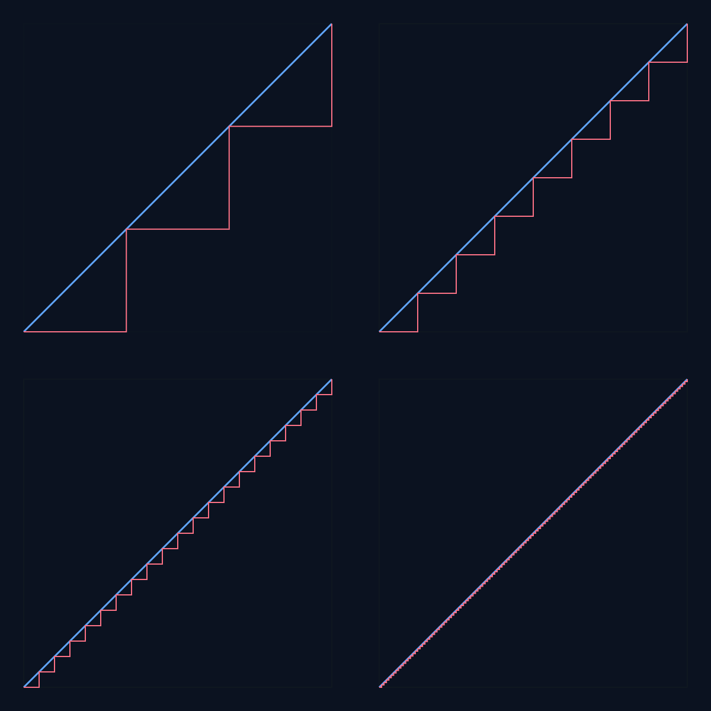

Mathematics is full of puzzles that appear contradictory at first sight. Often, the resolution comes from taking a closer look at how limits work. Limits are subtle: rules that apply to finite sums, finite shapes, or finite processes often change once we let the number of steps go to infinity. This shift is where paradoxes arise, two of which a covered in this post.
Zeno’s Turtle
The Greek philosopher Zeno of Elea is famous for formulating paradoxes that challenge our intuition about motion and infinity. His most iconic thought experiment imagines Achilles chasing a turtle. Even though Achilles runs faster, Zeno argues he can never catch the turtle: by the time Achilles reaches where the turtle was, the turtle has moved a little further ahead, and so on, ad infinitum. Formally, we can write Achilles’ path as a geometric series.
Suppose Achilles runs ten times faster than the turtle, and the turtle has a head start of distance
This is an infinite sum:
Achilles needs to run only a finite distance, slightly larger than
An Attempt at the Squaring of the Circle
Jumping from ancient paradoxes to modern misadventures, we find another famous impossibility: squaring the circle. The goal is to construct, with straightedge and compass alone, a square with the same area as a given circle. For centuries, mathematicians tried and failed, until the problem was finally settled in the 19th century.
The Indiana PI Bill and its Misassumptions
One of the more curious episodes is the story of Edward J. Goodwin, an amateur mathematician from Indiana. In 1897 he proposed a bill to the Indiana legislature, attempting to legislate a new value of
One version of Goodwin’s claim concerned the diagonal of a square. If a square has side length
We can formalize this idea by looking at length as a functional: assigning to each geometric object its length. However, this functional is not continuous in the sense Goodwin required. The staircase approximation to a diagonal illustrates this point vividly:

Each staircase has length equal to the sum of its horizontal and vertical steps, always greater than the diagonal. Yet as the steps become finer, the staircase visually converges to the diagonal. The paradox is that the length functional does not behave continuously under this limiting process.
Length can be expressed as a map from the Set of continuous functions
From the example above, we can conclude that
This is a counter-example to the limit-version of continuity.
Goodwin’s error was to assume some statement to hold for an approximation of the circle. Even though the approximation’s error is arbitrarily small, his statement cant be applied to circle (the limit).
The irrationality of PI
To fully understand why squaring the circle is impossible, we must confront the nature of
One classical proof of
Modern proofs refine and extend these arguments, some even proving that
Since straightedge-and-compass constructions can only generate numbers obtained through a finite sequence of rational operations and square roots, constructing a square with area exactly equal to a circle’s area would require